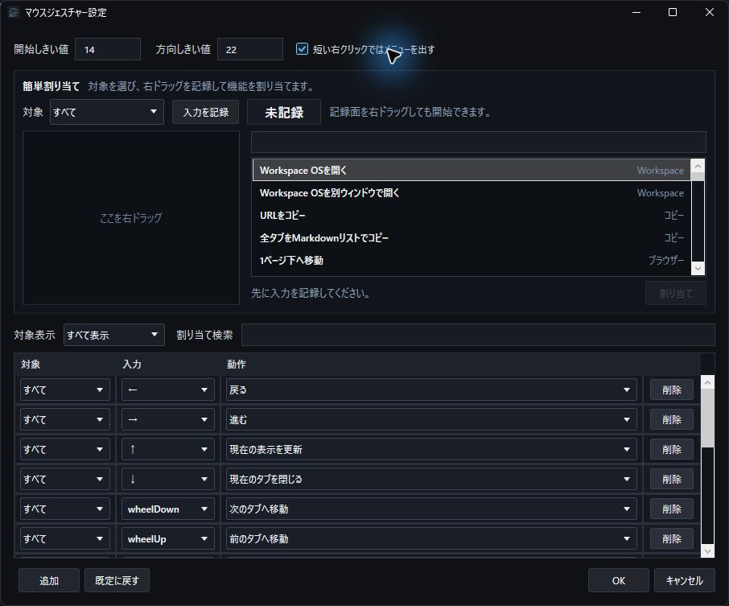
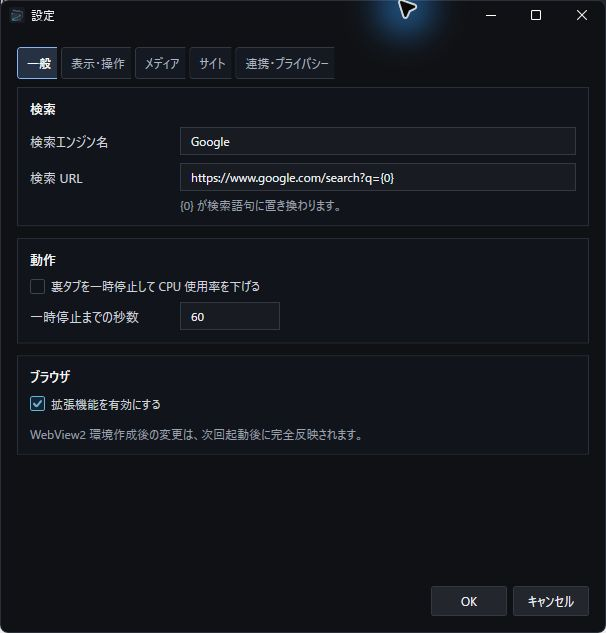

Kiten 操作ガイド
このガイドは、Kitenを実際に操作する順番に沿って説明します。
各項目は、次の順番で記載します。
- 操作を始める前の状態
- 実際の操作
- 操作後の結果
- うまくいかない場合の確認事項
現在の実行ファイル名、設定保存先、ソース内の名前には、開発名のTabBrowserが残っています。
目次
- 最初に確認する
- Webページを開く
- マウスジェスチャーを使う
- タブを管理する
- 分割表示を使う
- Workspaceへ保存する
- フォルダータブを使う
- QuickLookで内容を確認する
- YouTubeミニプレイヤーを使う
- コマンドパレットを使う
- 履歴、ブックマーク、ダウンロードを使う
- サイト権限、コンテナ、プライベートWindow
- 設定と連携機能を使う
- 困ったとき
- データ保存先
- 関連資料
1. 最初に確認する
1.1 動作環境
利用に必要なもの:
- Windows 11 x64
- Microsoft Edge WebView2 Evergreen Runtime
配布版は.NET Runtimeを同梱した自己完結型です。.NET SDKは不要です。バックアップ／復元には、配布物に含まれるPowerShellスクリプトと補助ツールを使います。
1.2 Kitenを起動する
開始状態
実行用ZIP Kiten-Gesture-Browser-0.1.0-preview.1-win-x64.zipを入手し、新しい空フォルダーへ展開済みです。Source code ZIPは実行用ではありません。
操作
- Explorerで展開先の
TabBrowser.exeを開きます。ZIP内から直接起動しません。 - メインWindowが表示されるまで待ちます。
- 前回のタブがある場合は、選択中だったタブから順番に復元されることを確認します。
結果
KitenのメインWindowが表示され、Webページを開ける状態になります。起動時は画面表示を優先するため、すべてのタブが同時に読み込みを開始するわけではありません。
うまくいかない場合
- Webページ部分だけが表示されない場合は、Microsoft Edge WebView2 Runtimeを確認します。
- 前回のタブがすぐ表示されない場合は、復元処理が段階的に進んでいるか少し待ちます。
- 配布物の入手、展開、更新、削除は、ZIP内の
docs\distribution-guide.mdを確認します。
1.3 メインWindowの入口を確認する
メインWindowは、上から順に次の領域で構成されています。
| 領域 | 主な操作 |
|---|---|
| タブ列 | タブの選択、並べ替え、固定、分割、別Windowへの移動 |
| 上部ツールバー | 戻る、進む、更新、復元、URL入力、操作、ツール、ダウンロード、ミニプレイヤー一覧、倍率 |
| ページ表示領域 | Webページ、Workspace、フォルダータブ、分割ペイン |
| 下部情報バー | リンク情報、処理結果、診断情報がある場合だけ表示 |
上部ツールバーの主な入口:
←/→/更新: 現在の操作対象ページを移動・更新復元: 直前に閉じたタブまたはWindowを復元▼: 閉じたタブ履歴を表示操作: ブックマーク、Workspaceツール: 履歴、権限、設定、拡張機能などDL: ダウンロード一覧YT: YouTubeミニプレイヤー一覧100%: 現在ページの倍率
設定によって一部のボタンを非表示にしている場合は、操作またはツールのメニューから同じ機能を開けます。
2. Webページを開く
2.1 URLまたは検索語を入力する
開始状態
KitenのメインWindowが表示されています。
操作
Ctrl+Lを押します。- 選択されたアドレス欄へURLまたは検索語を入力します。
- 開いているタブ、ブックマーク、履歴の統合候補が必要なら、
↑／↓で選びます。 Enterを押します。
マウスだけで操作する場合は、アドレス欄をクリックして入力し、右側の移動を押します。
統合候補は種類、タイトル、URLを最大8件表示します。入力直後には候補が選択されないため、そのままEnterを押せば従来どおり入力内容を開けます。候補選択中は、Ctrl+Enterで新しいタブ、Shift+Enterでバックグラウンド、Alt+Enterで分割表示として開けます。Escを押すと編集前のアドレスへ戻ります。プライベートWindowでは保存済み閲覧履歴を検索しません。
結果
- URLを入力した場合は、そのページへ移動します。
- 検索語を入力した場合は、設定されている検索エンジンで検索します。
- 開いているタブ候補を通常の
Enterで選んだ場合は、同じページを増やさず、そのタブがあるWindowへ移動します。
うまくいかない場合
- Workspaceでは
Ctrl+Lを横取りしません。 - 分割表示中は、最後に操作したペインのWebタブが対象になります。
- フォルダータブでは、
Ctrl+LはURL欄ではなくフォルダーパス欄を選択します。
2.2 新しいタブを作る
操作
Ctrl+Tを押します。- 新しいタブのアドレス欄へURLまたは検索語を入力します。
Enterを押します。
タブ列右側の+を押しても新しいタブを作成できます。
結果
現在のWindowへ新しい通常タブが追加されます。
2.3 ページ内を検索する
開始状態
検索したいWebページを表示しています。
操作
Ctrl+Fを押します。- 表示された検索欄へ検索語を入力します。
Enterで次の一致、Shift+Enterで前の一致へ移動します。Escで検索欄を閉じます。
結果
現在の操作対象ペインにあるWebページだけを検索します。
2.4 ページを拡大・縮小する
操作
Ctrl++: 10%拡大Ctrl+-: 10%縮小Ctrl+0: 100%へ戻す
ツールバー右端の倍率表示から操作することもできます。
結果
現在のWebページの倍率が変わります。倍率はサイトとコンテナの組み合わせごとに保存されます。
3. マウスジェスチャーを使う
3.1 右ドラッグで戻る
開始状態
同じタブで2ページ以上移動し、戻る履歴がある状態です。
操作
- Webページ上で右ボタンを押し続けます。
- マウスを左へ動かします。
- 軌跡付近と固定表示に
戻ると表示されることを確認します。 - 右ボタンを離します。
結果
直前に表示していたページへ戻ります。
うまくいかない場合
- 移動距離が短いと、通常の右クリックとして扱われます。
- 認識中に
Escを押すとジェスチャーをキャンセルできます。 - 設定を変更している場合は、画面に表示された機能名を優先してください。
3.2 既定のジェスチャーを試す
| 入力 | 操作 |
|---|---|
← |
戻る |
→ |
進む |
↑ |
更新 |
↓ |
タブを閉じる |
←↑ |
最近閉じたタブまたはWindowを復元 |
→↑ |
ページ先頭へ |
→↓ |
ページ末尾へ |
↓→ |
新しいタブ |
↑↓ |
現在タブを複製 |
↓← |
URLをコピー |
↑→ |
選択テキストを検索 |
←→ |
Workspace OSを開く |
→← |
ブックマーク一覧を開く |
方向を切り替える場合は、右ボタンを押したまま続けて曲げます。異なる方向を最大3つまで組み合わせられます。
3.3 通常の右クリックを使う
操作
- Webページ上で右ボタンを押します。
- マウスをほとんど動かさず、そのまま離します。
結果
リンク、画像、選択テキスト、入力欄など、右クリックした対象に合うメニューが表示されます。
3.4 右ボタンとホイールでタブを切り替える
開始状態
同じWindowに複数のタブがあります。
操作
- KitenのWindow内で右ボタンを押し続けます。
- ホイールを下へ回すと次のタブへ移動します。
- ホイールを上へ回すと前のタブへ移動します。
- 目的のタブで右ボタンを離します。
結果
タブをクリックせずに連続して切り替えられます。右クリックメニューは表示されません。
3.5 ジェスチャーの割り当てを変更する
操作
- ツールバーの
ツールを押します。 マウスジェスチャー設定を選択します。- 簡単割り当てで操作対象を選びます。
- 記録欄で右ドラッグし、方向を入力します。
- 機能を検索して
割り当てを押します。 OKを押して保存します。

結果
Webページ、フォルダータブ、Workspaceなど、対象ごとにジェスチャーを割り当てられます。
Workspaceを往復したい場合は、機能からWorkspace OSを開く／元のタブへ戻るを選びます。Workspace以外でこのジェスチャーを実行すると現在のタブを覚えてWorkspaceを開き、Workspaceでもう一度実行すると元のタブへ戻ります。従来のWorkspace OSを開くは開くだけの操作として残ります。
4. タブを管理する
4.1 タブを閉じて復元する
操作
- 閉じるタブを選びます。
Ctrl+Wを押します。- 復元する場合は
Ctrl+Shift+Tを押します。
マウスジェスチャーの既定設定では、↓で閉じ、←↑で復元できます。ツールバーの復元や閉じたタブ履歴も利用できます。
結果
通常Webタブとフォルダータブは、閉じたタブ履歴から復元されます。直前の操作がWindowの終了だった場合はWindow全体を復元します。Workspaceタブは固定入口のため、Ctrl+Wでは閉じません。
4.2 タブを並べ替える
操作
- タブを左ボタンで押し続けます。
- タブ列内の目的の位置へドラッグします。
- 挿入位置を確認してボタンを離します。
結果
タブがその位置へ移動します。分割中のタブは相方と一緒に移動します。
4.3 タブを別Windowへ移す
操作
- 移動するタブをドラッグします。
- タブ列から外側へドラッグし、Window枠の配置予告を確認します。
- 新しいWindowにする位置でボタンを離します。
結果
ボタンを離した時だけ新しいWindowが作成され、タブが移動します。保持時間を待つ必要はありません。既存の別Windowの横タブ列または縦タブ列へドロップすると、そのWindowへ統合できます。ドラッグ中にEscを押すと、開始前の並びへ戻して取り消します。
注意
- Workspaceタブは別Windowへ分離しません。
- 分割ペアの片方を移動した場合は、相方も一緒に移動します。
5. 分割表示を使う
5.1 2つのタブを並べる
開始状態
分割したい2つのタブがあります。
操作
- 分割へ追加するタブを右クリックします。
右側に分割表示または下側に分割表示を選択します。- 中央の境界をドラッグして比率を調整します。
結果
2つのタブが左右または上下へ表示されます。
5.2 分割中の操作対象を切り替える
操作
- 操作したいペイン内をクリックします。
- 対象ペインの強調表示を確認します。
- 戻る、進む、更新、検索、倍率変更などを実行します。
結果
最後に操作したペインだけが対象になります。非アクティブなフォルダーペイン上では、右ドラッグがジェスチャーとして成立した時点でそのペインが操作対象になります。
5.3 分割を解除する
操作
- 分割上部の
解除を押します。
結果
分割状態だけが解除され、両方のタブは通常タブとして残ります。タブを閉じる操作とは異なります。
6. Workspaceへ保存する
6.1 Workspaceを開く
操作
- ツールバーの
操作を押します。 Workspace OSを選択します。
既定ジェスチャーの←→でも開けます。
結果
Workspaceタブが表示されます。上部のWorkspace番号で作業領域を切り替えられます。
- Workspace番号列にマウスを置いてホイール上／下: 前／次のWorkspaceへ移動
- Workspace画面内で
Ctrlを押しながら右ボタン＋ホイール上／下: 前／次のWorkspaceへ移動
いずれもWorkspace 1～9を循環します。Ctrlを押さない右ボタン＋ホイールは、従来どおり前後のタブ切り替えです。
6.2 Workspaceへ名前を付ける
操作
- 上部のWorkspace番号を右クリックします。
名前を変更...を選択します。- 名前を入力して確定します。
- Workspace番号へマウスを置きます。
結果
番号と名前がツールチップへ表示されます。カードや配置は変更されません。
6.3 タブをカードとして保存する
操作
- Workspace左側のTab Shelfで保存したいタブを探します。
- タブをWorkspaceキャンバスへドラッグします。
- 配置したい場所でボタンを離します。
結果
タブがWorkspaceカードとして保存されます。
6.4 ファイルやフォルダーを登録する
操作
- Explorerで登録したいファイルまたはフォルダーを表示します。
- 対象をWorkspaceキャンバスへドラッグします。
- 配置したい場所でボタンを離します。
結果
元のファイルを移動せず、参照カードとして登録されます。画像や動画はサムネイル、フォルダーやアプリは種別を識別できるアイコンで表示されます。
6.5 複数のカードを選択する
操作
Ctrlを押しながらカードを順番にクリックします。- または、
Ctrlを押しながらWorkspaceの空白部分をドラッグして範囲選択します。
結果
複数のカードが選択され、一括で開く、移動する、削除するなどの操作を実行できます。カード以外の場所をクリックすると選択を解除します。
6.6 カードを整列する
操作
- 2件以上選択している場合は、選択カードだけを整列対象にできます。
- 右上の
整列または背景の右クリックメニューを開きます。 - 対象範囲と、コンパクト、名前、種類、サイト・場所、追加順のいずれかを選びます。
- 元へ戻す場合は
元に戻すを押します。
結果
配置はまとめて保存されます。同じ整列セッション中に複数の並び順を試しても、元に戻すで最初の配置へ戻ります。
6.7 論理フォルダーを使う
操作
- Workspaceの追加操作からフォルダーを作成します。
- カードをフォルダーカードへドラッグします。
- フォルダーカードを開きます。
結果
カードを実ファイルの場所とは関係なく、Workspace内の論理フォルダーへ整理できます。論理フォルダーWindowは、閉じたときの位置と大きさを記憶します。フォルダー内のカードをダブルクリックして開くと、開いた後に元のフォルダーWindowを閉じます。右クリックの開くまたはEnterで開いた場合は、続けて操作できるようフォルダーWindowを維持します。
7. フォルダータブを使う
7.1 実フォルダーをタブで開く
開始状態
Workspaceに実フォルダーの参照カードがあります。
操作
- 実フォルダーカードを右クリックします。
タブで表示を選択します。
結果
通常のWebタブと同じタブ列にフォルダータブが追加されます。
7.2 表示方法と並び順を変える
操作
- フォルダータブ上段の表示切り替えボタンで詳細表示またはアイコン表示を選びます。
- 並び替えメニューから名前、種類、更新日時、サイズを選びます。
- 必要に応じて昇順と降順を切り替えます。
詳細表示では列見出しを押して並び替えることもできます。
結果
画像や動画はアイコン表示でサムネイルを確認できます。並び順はフォルダーごとに記憶されます。
7.3 ファイルやフォルダーを開く
操作
Enter: 選択項目を開く- ダブルクリック: 対象を開く
- フォルダーの右クリック →
新しいタブで開く - フォルダーの右クリック →
バックグラウンドのタブで開く
結果
ファイルは既定のアプリ、フォルダーは選択した方法で開きます。フォルダータブを閉じた場合も、閉じたタブ履歴から復元できます。
新しいタブで開く、バックグラウンドのタブで開く、新しいウィンドウで開く、分割関連の操作はフォルダー専用です。ファイルを右クリックした場合はこのグループを表示せず、プレビューなどファイルに使える操作から表示します。
7.4 Windows標準のプロパティを表示する
操作
- ファイルまたはフォルダーを右クリックします。
プロパティを選択します。
結果
Windows標準のプロパティ画面が開きます。
8. QuickLookで内容を確認する
8.1 選択項目をプレビューする
開始状態
Workspaceまたはフォルダータブで、ファイルカードやファイル行を選択しています。
操作
Spaceを押します。
右クリックしてプレビューを選択しても開けます。
結果
ファイルを既定のアプリで開かず、QuickLookで内容を確認できます。画像、テキスト、PDF、動画、音声などは対応する表示へ切り替わります。
8.2 表示位置と大きさを変える
操作
- 上段の
浮動: 一覧の上へフローティング表示 - 上段の
右: 一覧の右側へペイン表示 - 上段の
下: 一覧の下側へペイン表示 - フローティングのタイトル領域をドラッグ: 表示位置を移動
- フローティング右下のハンドルをドラッグ: 幅と高さを変更
- 右ペインの左境界をドラッグ: 横幅を変更
- 下ペインの上境界をドラッグ: 高さを変更
結果
表示方法ごとの位置と大きさが保存されます。右ペインと下ペインは一覧へ重ならず、表示領域を分けて使用します。
8.3 QuickLookを閉じる
操作
Escを押します。
結果
QuickLookが閉じ、進行中の読み込みやメディア再生が停止します。
注意
入力欄、パス欄、検索欄へフォーカスがある場合は、SpaceをQuickLook操作として横取りしません。
9. YouTubeミニプレイヤーを使う
9.1 YouTube動画を独立Windowで開く
開始状態
通常のYouTube動画またはShortsのタブがあります。
操作
- 対象タブを右クリックします。
ミニプレイヤーで開くを選択します。
結果
動画が独立Windowで開きます。通常動画は横長、Shortsは縦長の初期サイズになります。Windowはタスクバーから最小化、復帰、終了できます。
9.2 ミニプレイヤーを操作する
操作
- Windowをドラッグ: 移動
- Windowの辺または角をドラッグ: リサイズ
- 動画をダブルクリック: 全画面と通常表示を切り替え
- 上端へマウスを移動: 上段帯を表示
- 下端へマウスを移動: 操作パネルを表示
- 動画領域で右ボタンを押したまま下へ動かし、
閉じる表示後に離す: ミニプレイヤーを閉じる - 上段の
常に最前面: Windowごとの最前面設定 - 上段の
最小化、閉じる: Window操作 - ライブ配信中: 取得できた現在の視聴者数を上段帯へ表示
- ライブ配信を初めて読み込んだ時: 自動的に現在のライブ位置へ移動して再生。読み込み直後に手動操作した場合は、その操作を優先
| マウス位置 | 表示される操作 |
|---|---|
| Window上端 | 上段帯: 常に最前面、最小化、閉じるなどのWindow操作 |
| 動画の下端 | 操作パネル: 再生、一時停止、音量などの動画操作 |
結果
Webページ内のYouTube操作と、Window自体の移動・終了を分けて操作できます。
9.3 ライブチャットまたはリプレイを開く
開始状態
ライブ配信中、またはYouTube側でチャットリプレイが提供されている動画をミニプレイヤーで開いています。
操作
- ミニプレイヤー上段の
チャットを押します。
結果
YouTube標準のライブチャットまたはチャットリプレイが独立Windowで開きます。チャットWindowは移動、リサイズ、最小化、最前面設定ができ、本体プレイヤーへ吸着させることもできます。
9.4 複数プレイヤーを一覧から操作する
操作
- メインWindowでYouTubeミニプレイヤー一覧を開きます。
- 対象プレイヤーを選択します。
- 一覧の順序を変える場合は、行内ボタン以外の項目本体をドラッグし、移動先の上下に表示される水色線へドロップします。
- 個別の再生、ミュート、音量、シーク、速度、ループ、最小化、最前面、終了を操作します。現在ライブ配信中の動画には
ライブへが表示され、配信の現在位置へ移動できます。YouTube公式プレイヤーのLIVE表示が赤い丸の場合は、すでにライブ位置のためボタンが無効になります。 - 必要に応じて
グリッド、横一列、縦一列、ランダムを押します。 - 整列前へ戻す場合は
最初に戻すを押します。
一覧にはプレイヤーごとの操作行と、全体の整列操作が表示されます。項目本体をドラッグすると一覧の順序を変更できます。
結果
複数のミニプレイヤーを一か所から操作できます。最初に戻すは、最初の整列前の位置と大きさへ戻します。
9.5 閉じたミニプレイヤーを復元する
操作
- メインWindow上部の
最近閉じた項目を開き、YTミニから対象を選択します。 - または、ミニプレイヤー一覧の
閉じた動画を復元を押します。
結果
直近20件までのYouTube／ローカル動画ミニプレイヤーを、閉じた時の再生位置、音量、速度、Window位置などを使って復元します。履歴はアプリ再起動後も残りますが、復元するまで動画やWebView2は読み込みません。
9.6 ローカル動画を開く
操作
- 一覧上部の
動画を開くから動画ファイルを選択します。 - または、フォルダータブの動画を右クリックして
YouTubeミニプレイヤーで開くを選択します。 - または、Workspaceの動画カードを右クリックして
ミニプレイヤーで再生を選択します。
結果
ローカル動画がYouTubeミニプレイヤーと同じ一覧・配置管理の対象として開き、基本設定ではループ再生します。
動画面を右ドラッグすると、YouTubeミニプレイヤーと同じ固定操作を利用できます。
- 右へ24px以上: ボタンを離すまで2倍速。離すと元の速度と再生状態へ戻ります。
- 左へ24px以上: ボタンを離すまで0.25秒ごとに0.5秒巻き戻します。
- 下へ24px以上:
閉じる表示を確認してボタンを離すと、そのミニプレイヤーを閉じます。 - 左右の操作中に逆方向へ動かすと、早送りと巻き戻しを切り替えられます。
登録済みの動画ミニプレイヤー用ジェスチャーがある方向は登録内容を優先します。操作中のEsc、右ボタン＋ホイール、入力の中断では固定操作を取り消し、元の速度と再生状態へ戻します。右ボタン＋ホイールのズーム、ホイールボタンドラッグの表示位置移動、サイドボタンの再生／一時停止とミュートもYouTube動画と共通です。
10. コマンドパレットを使う
10.1 操作や情報を検索する
操作
Ctrl+Shift+Kを押します。- 検索欄へ機能名、タブ名、URL、アプリ名などを入力します。
↑/↓で候補を選びます。Enterで実行します。
結果
現在のタブ、閉じたタブ、履歴、ブックマーク、コンテナ、Workspace、ミニプレイヤー、Windowsアプリ、ブラウザー操作を横断して検索できます。
10.2 ショートカットやジェスチャーから機能を探す
操作
- コマンドパレットへ
Ctrl+W、←、wheelDownなどを入力します。
結果
その入力に割り当てられている機能を確認できます。未割り当てを検索すると、ジェスチャーが割り当てられていない機能を探せます。
URLを持つ候補では、Ctrl+Enterで新しいタブ、Alt+Enterで現在タブとの分割表示として開けます。
11. 履歴、ブックマーク、ダウンロードを使う
11.1 最近閉じたタブまたはWindowを復元する
操作
Ctrl+Shift+Tを押します。
または、ツールバーの復元や「最近閉じた項目」を開きます。
結果
直前の終了操作が通常タブまたはフォルダータブなら、そのタブを復元します。直前の終了操作が「このウィンドウだけ閉じる」なら、タブ構成を含むWindow全体を復元します。「最近閉じた項目」で子タブを選べば、そのタブだけを復元できます。履歴一覧では「今日」「昨日」などの日付別に確認できます。
11.2 閲覧履歴を有効にする
閲覧履歴は初期状態では無効です。
操作
ツール→設定を開きます。連携・プライバシーを選択します。- 閲覧履歴を有効にします。
OKを押します。ツール→閲覧履歴を開きます。
結果
有効化後に正常表示したHTTP／HTTPSページのURL、タイトル、訪問日時、ホスト名、コンテナを検索できます。ページ本文、入力内容、Cookie、認証情報、Web Storageは保存しません。
11.3 クリップボード履歴を有効にする
クリップボード履歴は初期状態では無効で、アプリ終了時に消去されます。
操作
ツール→設定を開きます。- クリップボード履歴を有効にします。
OKを押します。ツール→クリップボード履歴を開きます。
結果
通常のテキスト、URL、ファイル、フォルダーをKitenの起動中だけ検索して再利用できます。Windowsの履歴除外指定が付いたクリップボード内容は取り込みません。
11.4 現在のページをブックマークする
開始状態
あとで開きたいWebページを表示しています。
操作
- ツールバーの
操作を押します。 現在のページをブックマークを選択します。- 保存するタイトルとフォルダーを確認して確定します。
結果
現在のページのタイトルとURLがブックマークへ保存されます。新しいタブ画面、アドレス欄、コマンドパレットから検索できます。
11.5 ブックマークを整理する
操作
操作→ブックマーク一覧を開きます。- 上部の検索欄または並び順から目的のブックマークを探します。
- 左側の
新規フォルダで分類用フォルダーを作成します。 - ブックマークをフォルダーへドラッグするか、選択して
フォルダへ移動を押します。 - 開く場合は、対象をダブルクリックするか
開くを押します。
結果
ブックマークをフォルダー、検索、並び順で整理できます。編集、削除、重複整理、存在確認も一覧から実行できます。
バックアップと移行
取込: Chrome／Edgeのブックマークを取り込むHTML出力: ブラウザー互換のHTMLへ出力するバックアップ: Kiten用のJSONバックアップを作成する復元: JSONバックアップから戻す
11.6 ダウンロードを確認する
開始状態
Webページからファイルのダウンロードを開始しています。
操作
- ツールバーの
DLを押します。 - 対象のダウンロードを探します。
- 状態に応じて、一時停止、再開、中止、再試行を選択します。
- 完了後は
開くまたはフォルダーを押します。フォルダーは保存先をフォルダタブで開き、右クリックメニューのエクスプローラーで開くではWindowsのExplorerで開きます。
結果
進行中、完了、失敗したダウンロードを同じ一覧で確認できます。進捗率、受信済みサイズ、総サイズ、速度、残り時間が表示されます。URLコピー、詳細表示、履歴削除、実ファイル削除も実行できます。
12. サイト権限、コンテナ、プライベートWindow
12.1 コンテナを作成する
操作
ツール→設定を開きます。連携・プライバシーを選択します。コンテナプロファイルで名前と色を入力します。追加を押します。OKを押して設定を確定します。
結果
標準とは別のWebView2保存領域を使うコンテナが追加されます。コンテナを実際に使うまで、追加のWebView2環境は作りません。
12.2 コンテナを指定してページを開く
操作
- 新しいタブを作る場合は、タブ列の
+を右クリックしてコンテナを選びます。 - 現在のタブを切り替える場合は、タブを右クリックして
別コンテナで開き直すを選びます。 - ページまたはリンクでは、Webページの右クリックメニューから
別コンテナで開くを選びます。
結果
同じサイトを異なるログイン状態や用途に分けて開けます。コンテナ間でCookieやWeb Storageをコピーせず、その内容をKiten側から読み取りません。
12.3 サイト権限を確認する
操作
ツールを押します。サイト権限・プライバシーを選択します。- 対象コンテナを選びます。
- カメラ、マイク、通知、位置情報などの権限を確認します。
- 必要な項目を許可、拒否、または既定へ戻します。
結果
サイトとコンテナごとの権限を確認・変更できます。Cookie、認証情報、Web Storageの内容はKiten側で読み取りません。
12.4 閲覧データを削除する
操作
ツール→サイト権限・プライバシーを開きます。- 対象コンテナと期間を選びます。
- キャッシュ、Cookieとサイトデータ、閲覧履歴、ダウンロード履歴から削除対象を選びます。
- 表示された注意事項を確認して実行します。
結果
選択したコンテナと期間のデータだけを削除します。Cookieとサイトデータを削除した場合は、サイトからログアウトする可能性があります。
設定画面のコンテナ一覧にあるデータ削除は、そのコンテナの保存領域を明示的に削除する操作です。
12.5 プライベートWindowを開く
操作
ツールを押します。新しいプライベートWindowを選択します。
結果
一時的なWebView2保存領域を使用するWindowが開きます。閲覧履歴、閉じたタブ、セッション、ダウンロード履歴、ミニプレイヤー状態は保存しません。
注意
ダウンロードした実ファイルと、明示的にWorkspaceやブックマークへ保存した内容は残ります。
13. 設定と連携機能を使う
13.1 設定画面を開く
操作
- ツールバーの
ツールを押します。 設定を選択します。- 上部のカテゴリタブを選びます。
- 設定を変更します。
OKを押します。
結果
確定した設定が保存されます。設定Windowを開いたままでも、他のKiten WindowやYouTubeミニプレイヤーを操作できます。
設定カテゴリ:
一般: 検索、基本動作、WebView2表示・操作: QuickLook、ツールバー、ジェスチャーメディア: ダウンロードサイト: 5ch実況、ChatGPT表示連携・プライバシー: クリップボード履歴、閲覧履歴、コンテナ
リンク先プレビューは初期状態で有効です。一般→動作のリンク先をマウスオーバーでポップアップ表示するを外してOKを押すと無効になります。マウスポインターが止まった後にリンク先へアクセスする場合があります。取得には専用InPrivateプロファイルを使い、通常タブやコンテナのCookie・ログイン状態を使いません。ログインを要する画像が得られない場合があります。InPrivateでも接続先との通信は発生し、IPアドレス等が伝わり得ます。

13.2 設定カテゴリをホイールで切り替える
操作
- 設定画面上部のカテゴリタブへマウスを置き、ホイールを回します。
- または、設定画面内で右ボタンを押しながらホイールを回します。
結果
設定カテゴリが前後へ切り替わります。通常の設定内容上では、ホイールはスクロールに使われます。
13.3 5ch実況向け表示を有効にする
操作
ツール→設定を開きます。サイトを選択します。5ch実況向け表示を有効にするを有効にします。- 必要に応じて、新着強調、自動取得、次スレ移行、自動追従、返信プレビュー、投稿者ID表示を調整します。
OKを押します。- 公式5ch実況スレを開きます。
結果
対象の実況スレだけが簡潔なレス表示へ切り替わり、設定に応じて新着取得と自動追従を開始します。過去レスを読んでいる間は最下部へ移動せず、新着件数を表示します。
13.4 ChatGPTとXの表示支援を切り替える
ChatGPT
- ChatGPTを表示します。
- ツールバーの
GPTを押します。 - 文字サイズ、行間、本文幅などを調整します。
X
ツールを押します。X 整形モードを切り替えます。
結果
対象サイトだけへ表示調整を適用します。通常のWebサイトには専用CSSやJavaScriptを適用しません。
13.5 展開済み拡張機能を追加する
開始状態
manifest.jsonを含む展開済みChrome拡張機能フォルダーがあります。
操作
ツールを押します。拡張機能フォルダを追加を選択します。manifest.jsonがあるフォルダーを指定します。ツール→拡張機能を管理を開きます。- 一覧から拡張機能を選び、
ON/OFF、設定、削除を操作します。
結果
WebView2が対応する範囲で拡張機能が読み込まれます。
注意
Chromeウェブストアからの直接インストールと、.crxの直接読み込みには対応していません。設定で拡張機能を有効化した直後は、Kitenの再起動後に完全反映される項目があります。
13.6 バージョン情報とRuntime診断を確認する
操作
Ctrl+Shift+Kでコマンドパレットを開きます。バージョン情報またはRuntime診断を検索し、バージョン情報・Runtime診断を開くを実行します。バージョン情報タブで公開版番号、ソースSHA、実行チャンネル、Windows、.NET／WebView2 Runtimeを確認します。- 不具合報告用には
基本情報をコピーを押します。現在は公開配布ページと不具合報告先が未設定のため、各ボタンは準備中として無効です。 - 詳細な状態は
再取得で更新します。長時間確認する場合は計測開始を押し、終了時に停止を押します。 - 必要に応じて
詳細診断をコピーまたはレポート保存を使います。
結果
版情報タブでは、配布物の識別と不具合報告に必要な固定10項目を確認・コピーできます。WebView2をまだ使用していない場合、WebView2 Runtimeは未取得と表示されます。この確認のために新しいWebView2を作成することはありません。
詳細診断では、Window、タブ、WebView2、分割、ミニプレイヤー、ライブチャット、入力所有権、メモリ、ハンドル、起動段階に加え、タブの休止・メモリ解放・復元件数を確認できます。
計測開始後は30秒ごとに、本体／WebView2／合計CPU、Renderer／GPU CPU、合計Private Memory、計測開始時からのメモリ差分を最大6時間分だけメモリ内へ保持します。CPUは全論理CPU基準で、2回目のサンプルから表示されます。YouTubeミニプレイヤーでは、同じ区間の描画・ドロップ・破損フレーム差分も保存レポートで確認できます。保存レポートには、負荷が本体・WebView2のどちらへ偏っているかを示す参考診断も含まれます。参考診断だけでタブの終了や再読み込みを自動実行することはありません。
基本情報には、ユーザー名、PC名、個人のパス、閲覧URL、ページ名、メモ、Cookie、認証情報、環境変数、ログ本文を含めません。詳細診断もURL、ファイルパス、QuickLook内容、Cookie、認証情報、Web Storageを収集しません。ファイルへ書き込むのはレポート保存を実行したときだけです。
14. 困ったとき
14.1 Webページだけが表示されない
- 対象タブを更新します。
- 別タブが正常に表示できるか確認します。
- Microsoft Edge WebView2 Runtimeを確認します。
- Runtime診断で対象WebView2の状態を確認します。
14.2 YouTubeミニプレイヤーが黒画面になる
- ミニプレイヤー一覧で対象を選択します。
- 個別の再読み込みを実行します。
- 改善しない場合は対象プレイヤーを閉じ、閉じた動画の復元または元タブから開き直します。
- 長時間利用後に繰り返す場合は、Runtime診断と診断ログを確認します。
14.3 ジェスチャーが通常の右クリックになる
- 認識開始に必要な距離まで動かしているか確認します。
- 軌跡と機能名が表示されるまで右ボタンを離さないようにします。
ツール→マウスジェスチャー設定で対象画面と割り当てを確認します。- 右ボタン＋ホイール中ではないことを確認します。
14.4 復元されたタブの表示を待っている
Kitenは起動速度を優先し、最後に選択していたタブから段階的に復元します。目的のタブを選択すると、そのタブの準備を優先します。
15. データ保存先
引数を付けずに起動する常用版の主なユーザーデータは、次の場所へ保存します。
%LOCALAPPDATA%\TabBrowser\
├─ settings.json
├─ session.json
├─ window-memory.json
├─ bookmarks.json
├─ workspace.db
├─ youtube-mini-players.json
├─ container-profiles.json
├─ downloads\history.json
├─ WebView2\
└─ containers\
15.1 常用版と開発版
開発版は--channel developmentを付けて起動します。
TabBrowser.exe --channel development
開発版の設定、セッション、Workspace、履歴、WebView2プロファイルは次の専用場所へ保存し、常用版と共有しません。
%LOCALAPPDATA%\TabBrowser-Dev\
常用版と開発版は同時に起動できます。開発版のWindowタイトルには[開発版]と表示します。FolderTabで扱う実ファイルとダウンロード先はWindows上の同じ実体なので、開発版では専用のテストフォルダーを使用してください。
開発成果を常用版へ反映する場合は、常用版を終了し、%LOCALAPPDATA%\TabBrowserをバックアップしてから、全検証済みの同一publish成果物で常用版を更新します。開発版のデータを常用版へ丸ごとコピーしないでください。
設定やユーザーデータを初期化する場合は、必要なバックアップを作成してから操作してください。
16. 関連資料
- README
- ブラウザー基本操作仕様
- マウスジェスチャー仕様
- 分割表示仕様
- Workspace OS仕様
- QuickLook仕様
- YouTubeミニプレイヤー仕様
- コマンドパレット仕様
- サイト権限・プライバシー仕様
- 操作ガイド スクリーンショット計画
配布用ローカル動画の対応環境
配布用構成のQuickLookとローカル動画ミニプレイヤーは、WPF標準のMediaElementを利用します。再生できる形式・コーデックはWindows環境に依存します。WebMやMKV等も拡張子だけでは再生を保証しません。再生エラー時は表示内容を記録し、既定アプリで開く操作を使えます。YouTubeミニプレイヤーは既存のWebView2方式です。通常の開発用構成はLibVLCを維持します。